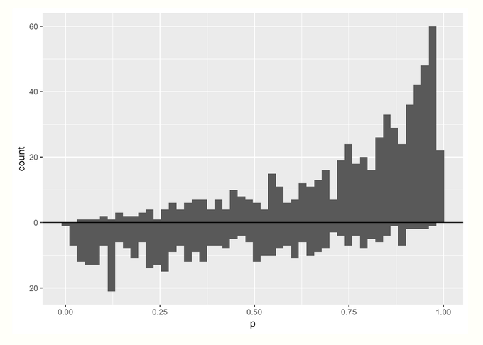

54 Econometrics, General
TOC
- Misc
- Terms
- Standard Errors
- Instrumental Variable (IV)
- Difference-in-Differences Estimator (DiD)
- Synthetic Control Method (SCM)
- Interrupted Time Series (ITS)
- Regression Discontinuity Design (RDD)
- Propensity Score Matching
Misc
- ATE or LATE?
- If proposed policy is to give everyone the treatment, then ATE
- If proposed policy only affects a subset, then maybe LATE is more appropriate
Terms
- Disturbances - the error term in an econometric models (aka residuals in a regression)
- Economic Shock - refers to any change to fundamental macroeconomic variables or relationships that has a substantial effect on macroeconomic outcomes and measures of economic performance,
- Examples: unemployment, consumption, and inflation.
- Endogenous Variable - variables that are correlated with the population error term. Determined inside the model.
- An observed endogenous variable is affected by other variables in the system (it is roughly equivalent to a dependent variable in an experiment). Its the variable that show differences we wish to explain.
- When the causality between X and Y goes both directions, both are endogenous.
- Also see Glossary: DS terms
- Exogenous Variable - variables that are NOT correlated with the population error term. Determined outside the model
- An observed exogenous variable is not controlled by other variables in the system (it is roughly equivalent to an independent variable in an experiment). Its the variable used to explain the differences in the endogenous variable.
- Limited Dependent Variable (LDV) - a variable whose range of possible values is restricted in some important way.
- i.e. censoring, truncating, discrete
- e.g. probabilities, or is constrained to be positive, as in the case of wages or hours worked
Standard Errors
- Heteroskedastic robust standard errors (discussed by Zeileis in his econometrics book https://www.econometrics-with-r.org/5-4-hah.html and in Whites paper http://qed.econ.queensu.ca/working_papers/papers/qed_wp_537.pdf)
- Types
- H0 is the original
- H1 follows H0 but corrects for degrees of freedom. Only unbiased when experiment is balanced.
- Balance example: data for vehicle accidents has state and year variables. Balanced is each state has accidents data for each year
- Example
- Types
lmtest::coeftest(model, vcov. = vcovHC, type = "HC1") # vcovHC is part of the sandwich package- H2 is unbiased when errors are homeoskedastic
- i.e. dont just blindly use without checking for homeoskedastity
- H3 is derived from jackknife procedure
- Also HC4, HC5, and modified HC4m
- HC4 corrects for high-leverage points
- Cribari-Neto F., Da Silva W.B. (2011). A New Heteroskedasticity-Consistent Covariance Matrix Estimator for the Linear Regression Model. Advances in Statistical Analysis, 95(2), 129146
- Guidelines
- tl;dr - Use HC3 (default method for
vcovHC) for small to moderately sized data sets and jackknife,vcovBS(..., type = "jackknife")orvcovJK, for large datasets (HC3 computation will fail). - If sample size is small and heteroskedasticity present, then H0, H1, or H2 shouldnt be used. H3 isnt quite as reliable as regular OLS standard errors.
- If heteroskedasticity present, then H3 is superior, otherwise H2 better than H1 which is better than H0
- No real guidance on HC4, HC5, and modified HC4m. See paper (above)
- tl;dr - Use HC3 (default method for
- Heteroskedastic and autocorrelation (HAC) consistent (discussed in Hanck book)
- Similar as for heteroskedasticity, autocorrelation invalidates the usual standard error formulas as well as heteroskedasticity-robust standard errors since these are derived under the assumption that there is no autocorrelation.
- R2 and F test not affected (Wald test preferred when heterskadasticity and autocorrelation present)
- not sure where I got this. Wasnt from the Hanck book
- Newey-West is suboptimal; the QS kernel is optimal
- Clustered standard errors belong to these type of standard errors. They allow for heteroskedasticity and autocorrelated errors within an entity but not correlation across entities.
- From https://datascience.blog.wzb.eu/2021/05/18/clustered-standard-errors-with-r/
- In ordinary least squares (OLS) regression, we assume that the regression model errors are independent. This is not the case here: Each subject may be surveyed several times so within each subjects repeated measures, the errors will be correlated. Although that is not a problem for our regression estimates (they are still unbiased [Roberts 2013], it is a problem for for the precision of our estimates the precision will typically be overestimated, i.e. the standard errors (SEs) will be lower than they should be [Cameron and Miller 2013]. The intuition behind this regarding our example is that within our clusters we usually have lower variance since the answers come from the same subject and are correlated. This lowers our estimates SEs.
vcovCL()will give STATA clustered standard errors.vcovCL()may be biased downwards- Circumstances where it may be biased downwards (i.e. CIs too small)
- Imprecise calculations arise when there is a low number of clusters (e.g. classrooms, schools)
- less than 50 clusters
- Multi-way (i.e. more than 1 fixed effect in panel data)
- If the cluster sizes are wildly different.
- If the intra-cluster correlations varies across clusters.
- Imprecise calculations arise when there is a low number of clusters (e.g. classrooms, schools)
- Solutions:
vcovJK-Not downward biased and yield better coverage rates for confidence intervals compared to other robust covariance estimates- based on leave-one-out estimates of the coefficients/parameters of a model. This means that the model is reestimated after dropping each observational unit once, i.e., each individual observation in independent observations or each cluster in dependent data
- HC3 seems to be an estimate of the Jackknife. To obtain HC3 covariances that exactly match the jackknife covariances, the jackknife has to be centered with the full-sample estimates (arg center = estimate) and the right finite-sample adjustment (?) has to be selected for the HC3.
- Satterthwaite corrected cluster robust sandwich estimator (?)
- wild cluster bootstrap {clubSandwich} {fwildclusterboot}
- Computationally expensive
- fwildclusterboot is VERY fast though
- Computationally expensive
- For small cluster sizes, choose wild cluster bootstrap over Satterthwaite corrected cluster robust sandwich estimator when: (article)
- extreme treatment proportions (e.g. 80% obs treated, 10% control)
- extreme differences in cluster sizes (i.e. extreme imbalance)
- {ceser} - Cluster-estimated standard errors
- More conservative than the CRSE method,
sandwich::vcovCL - less sensitive to the number of clusters and to the heterogeneity of the clusters, which can be a problem for both CRSE and bootstrap methods
- also has heteroskedacity corrections: HC0, HC1, HC2, HC3, or HC4
- More conservative than the CRSE method,
- Circumstances where it may be biased downwards (i.e. CIs too small)
Instrumental Variable (IV)
- Model

- u and v are error terms, X is an endogenous variable, Z is an exogenous, instrumental variable, W is another predictor of the outcome variable except its exogenous.
- Misc
- Resources
- Video series covering all the concepts
- If X and u are correlated (endogenity) then OLS is inconsistent. So IV modeling uses the Z to isolate the part of X that isnt correlated with u. Potential causes for this correlation between X and u are:
- Unobservable omitted variable(s)
- Using an IV allows us to use part of X than isnt associated with the omitted variable (i.e. confounder) but is still associated with Y
- Measurement error
- simultaneous causality
- Unobservable omitted variable(s)
- Resources
- Terms
- endogenous variable - variables that are correlated with u, the population error term. Determined inside the model.
- When the causality between X and Y goes both directions, both are endogenous.
- exogenous variable - variables that are NOT correlated with u. Determined outside the model
- endogenous variable - variables that are correlated with u, the population error term. Determined inside the model.
- Conditions for valid instruments
- Instrument relevance: corr (X , Z) != 0 (Predictive of X)
- Checks (1st stage)
- Instrument should have a significant p-val
- F-Test stat > 10; t-test stat > 3.16 (rules of thumb)
- Checks (1st stage)
- Instrument exogeneity: corr (Z, u) = 0, corr(Z, v) = 0
- Check: balancing test (t-test); results should be insignificant (?)
- Wouldve thought you could do some kind of check on the residuals
- Check: balancing test (t-test); results should be insignificant (?)
- Exclusion restiction: no impact on the dependent variable directly. It only impacts the dependent variable through its impact on the treatment variable
- Check
- correlation? or a partial correlation?
- Check
- Instrument relevance: corr (X , Z) != 0 (Predictive of X)
- Good instruments
- may not have a strong causal relationship with x and therefore overlooked in the subject matter literature. Domain field work into the data generating process can help identify new instruments.
- The effect of the instrument on the population is somewhat random (Instruments perform a quasi-randomization)
- e.g. A policy that may or may not have an effect on a population should make it exogenous. Something outside the control of the individual that influences her likelihood of participating in a program, but is otherwise not associated with her characteristics.
- Examples
- outcome: log(wage), predictor: womans education, instrument: mothers education
- This might not follow condition #2. If the daughters ability is an omitted variable which is in the error term (u), and mothers education are correlated, then #2 is violated.
- outcome: #_of_kids (fertility), predictor: years_of_education, instrument: pre/post government policy that increases mandatory years of education
- outcome: log(wage), predictor: womans education, instrument: mothers education
- Steps
- Regress X on Z where the -terms and Z are the parts uncorrelated with u.
- Drop the error term, v, which is the part of X thats correlated with u
- Regress the Y on the modified X to estimate the s

- When OLS is used to calculate the modified X, this process is called two-stage least squares (2SLS)
- Effects (Also see LATE and compliance in Experiments, Design)
- Using an instrumental variable allows us to identify the impact of the treatment on compliers. This is known as the local average treatment effect or LATE.
- The LATE is the impact that the treatment has on the people that comply with the instrument.
- ^IV only captures the causal effect of X on Y for compliers whose X vary by Z
- ^IV is a weighted average of the treatment effect for compliers, with more weight given to more compliant groups
- Example: it is the impact of additional years of schooling (treatment) on fertility of women (outcome) affected by the school reform policy (instrument) only because they live in municipalities that had implemented it.
- **Requires an extra restriction on the instrumental variable**
- Monotonocity (no defiers): There is no one in the sample that does not receive the treatment because they received the instrument. This is usually a reasonable assumption to make but it can only be made based on intuition.
- (Mathematically) its the number of people assigned and received treatment is always greater than or equal to the number of people not assigned yet received treatment.
- Monotonocity (no defiers): There is no one in the sample that does not receive the treatment because they received the instrument. This is usually a reasonable assumption to make but it can only be made based on intuition.
- LATE = ATE if any of the following is true
- No heterogeneity in treatment effects
- 1,i = 1 for all i
- No heterogeneity in first-stage responses to the instrument Z
- 1,i = 1 for all i
- No correlation between response to instrument Z and response to treatment X
- Cov(1,i , 1,i) = 0
- No heterogeneity in treatment effects
- The LATE is the impact that the treatment has on the people that comply with the instrument.
- Also see Complier Average Causal Effects (CACE) https://www.rdatagen.net/post/cace-explored/
- Using an instrumental variable allows us to identify the impact of the treatment on compliers. This is known as the local average treatment effect or LATE.
- Caveats
- The IV model is not an unbiased estimator, and in small samples its bias may be substantial
- A weak correlation between the instrument and endogenous variable may provide misleading inferences about parameter estimates and standard errors.
- 1, the average treatment effect, assumes that all subgroups experience the roughly the same effect. If there are different subgroups of the population that are substantially affected differently, then a weighted average of subsets approach can be used.
- Example Y = lung cancer, X = cigarettes, Z = cigarette tax. Perhaps people whose smoking behavior is sensitive to a tax may have a different 1 than other people
Difference-in-Differences Estimator 
- Without random samples as data, the selection into one of the two groups is by choice, thus introducing a selection bias
- Some treatments we wish to apply cannot be applied at the individual level but necessarily effect entire groups. Instead of comparing treatment and control groups within the same population at the same time, we can compare the relative change across treatment and control populations across time.
- When you have group-level treatments or data available, use random variation across populations to compare their overall trends over time
- packages
- {did}
- Manually
df_did <- df %>%
mutate(after = year >= 2014) %>%
mutate(treatafter = after*treat)
reg <- lm(murder ~ treat + treatafter + after, data = DiD)Basically a standard lm with an interaction between the treatment indicator and time period indicator demarking before/after treatment.
Predictions

The DiD effect works out to be the interaction effect, 3 = (2nd - 1st eq) - (4th - 3rd eq)
Example
- We want to estimate the effect of a store remodel on visits.
- A remodel affects all potential customers, so this treatment cannot be applied at the individual level; in theory, it could be randomized to individual stores, but we do not have the budget for or interest in randomly remodel many stores before there is evidence of a positive effect. Approach
- In two separate populations, one receives the treatment and one does not. We believe but-for the treatment the two populations would have similar trends in outcome
- We can estimate the treatment effect by taking the difference between the (post-treatment difference between populations)(solid lines after treatment) and (the pre-treatment difference between populations) (solid lines before treatment)
- DiDs control (dotted line) is an extrapolation of the treatment case that must be parallel to the mean post-treatment outcome (green line post-treatment) of the non-treated case
- The effect is the difference between DiDs control (blue dotted line) and the post-treatment outcome (blue line post-treatment) of the treated case.
- In effect, this is the same as extrapolating the counterfactual for the treated population in the post-treatment period if it had not received treatment (the dashed line in the image above)
- Technically, this is implemented as a fixed-effects regression model Key Assumptions
- The decision to treat the treatment group was not influenced by the outcome (no anticipation to treat)
- e.g. poverty rate spikes and community expects a policy to be enacted soon, so it acts (spends money, etc.) in anticipation of that help coming
- If not for the treatment, the two groups being compared would have parallel trends in the outcome. Note that groups are allowed to have different levels but must have similar trends over time
- Pretesting parallel trends assumption:
- Options if this assumption is violated
- Use pre-treatment variables to filter data to create similar groups (Treatment/Control) so they are more likely to have similar trends (pre-cursor to Synthetic Controls method)
- estimate the propensity score based on observed covariates; compute the fitted value
- run a weighted DiD model
- Extrapolate the difference in pre-treatment trends to post-treatment (paper) (Also see {HonestDiD})
- Use a differential trends method (explainer, says code available on request)
- includes each post-intervention time period as a dummy variable in your model, and average these to obtain an average treatment effect
- Combination of DiD and IV (paper)
- Use pre-treatment variables to filter data to create similar groups (Treatment/Control) so they are more likely to have similar trends (pre-cursor to Synthetic Controls method)
- There is no spill-over effect such that treating the treatment group has an effect on the control group
Application
- We can estimate the effect of a store remodel on visits by comparing store traffic before and after the remodel with traffic at a store that did not remodel.
- Note how sensitive this method is to our assumptions:
- if the remodel is an expansion and caused by a foreseen increase in traffic, our first assumption is violated and our effect will be overestimated
- if the control we chose is another nearby store in the same town, we could experience spillover effects where more people who would have otherwise gone to the control store decide to go to the treatment store instead. This again would overestimate the effect
- Another counter-example that violates the assumption would be measuring the effect of placing a certain product brand near a stores check-out on sales and using sales of a different brand of the same product as the control. Why? Since these products are substitutes, the product placement of the treatment group could spillover to negatively effect sales of the control Related Methods
- Variants exist that relax different assumptions. For example, we may consider cases in which different units receive the treatment at different times, different units have different (heterogenous) treatment effects, the parallel trend assumption only holds after conditioning on covariates, and many more scenarios
- Synthetic control methods can be thought of as an extension of difference-in-differences where the control is a weighted average of a number of different possible controls
- Bayesian structural time-series methods relax the parallel trends asumptions of difference-in-differences by modeling the relationship between time series (including trend and seasonal components)
Abadie, Alberto (2005). Semiparametric Difference-in-Differences Estimators, Review of Economic Studies (2005) 72, 119
- Assumption: non-parallel outcome dynamics between treated and controls caused by observed characteristics
- Two-step strategy:
- estimate the propensity score based on observed covariates; compute the fitted value
- run a weighted DiD model
- The idea of using pre-treatment variables to adjust trends is a precursor to synthetic control
Strezhnev (2018) extends this approach to incorporate pre-treatment outcomes
Other considerations (article)
- Levels are important.
- Always look at differences in levels between treatment and control, and not just trends. If there are large differences, than think about why they are so different.
- Could these differences affect future trends in our outcome of differences?
- Functional forms matter.
- When comparing our treatment and control trends, do we think that they evolve similarly in terms of absolute or relative terms? Do we want to use levels or logs?
- Pre-treatment parallel tests are problematic.
- Only because we reject an unequal parallel trend does not mean that we confirmed its validity, and often, these rejection tests are underpowered.
- Levels are important.
Stepped Design (Athey)
- Assumptions
- adoption date is conditional on the potential outcomes and possibly pretreatment variables. Guaranteed by design
- You can relax (troublesome) random assignment assumption by requiring only that the adoption date is completely random within subpopulations with the same values for the pre-treatment variables (e.g. units are clusters of individuals like states)
- potential outcomes which rules out the presence of certain treatment effects
- No anticipation - outcome at present is not affected by anticipation of a future treatment date.
- Invariance to history - duration of treatment prior to a given period doesnt affect the outcome variable value for that period
- More plausible when units are clusters of individuals (e.g. states)
- adoption date is conditional on the potential outcomes and possibly pretreatment variables. Guaranteed by design
- Auxillary Assumptions (i.e. sometimes needed for particular analyses)
- Constant treatment effect across time
- Constant treatment effect across units
- Assumptions
Synthetic Control Method (SCM)
- Misc
- Notes from: Using Synthetic Controls: Feasibility, Data Requirements, and Methodological Aspects
- Extensions
- Generalized synthetic control by Xu (2017)
- Synthetic difference-in-differences by Doudchenko and Imbens (2017)
- Penalized synthetic control of Abadie e LHour (2020)
- Matrix completion methods of Athey et al. (2021)
- Creates a synthetic control based on the pre-treatment features of the treatment unit and non-treated units. A control thats based on comparison units (i.e. non-treatment units) often provides a better control than a control solely based on the treated unit (like in DiD). After treatment, you take the difference between this synthetic control and your treatment unit to estimate the effect of the treatment. Similar to DiD, except on how the control is formulated.
- Terms
- donor pool or donors: the group of units that are untreated which are used to calculate the synthetic control
- unit, cell, case: interchangeable names for the population level youre testing in the experiement (e.g. herd, school, store, city, state, precinct)
- Recommended use cases:
- When events take place at the aggregated level, e.g. county, state, province.
- You only have one treated unit and a few control units.
- Advantages
- Better apples to apples comparison that DiD since the control should be a better estimate.
- The weights (which sum to 1) from the calculation of the synthetic control add to the interpretability of the method by giving us information about the importance of each non-treated unit in the formulation of the synthetic control
- The donor weights are sparse due to the optimization process. Only a few donors contribute to the synthetic control.
- SCM provides transparency about how different the non-treatment units are from the treatment unit. This difference can be calculated.
- The choice of a synthetic control does not rely on the post-intervention outcomes, which makes it impossible to cherrypick the study design that may affect the conclusions.
- Choosing units for the donor pool
- The risk of over-fitting may also increase with the size of the donor pool, especially when T0 (pre-treatment period) is small
- Each of the units in the donor pool have to be chosen judiciously to provide a reasonable control for the treated unit. Including in the donor pool units that are regarded by the analyst to be unsuitable controls (because of large discrepancies in the values of their observed attributes Zj or because of suspected large differences in the values of the unobserved attributes j relative to the treated unit) is a recipe for bias.
- Donor units with similar values of the observed predictors as the treated unit should be chosen. If its believed that a unit has a large unobserved difference with the treated unit, it shouldnt be included.
- As a rule of thumb, Abadie, Diamond, and Hainmueller (2010) suggest excluding units for which the prediction MSE is larger than twice the MSE of the treated unit.
- Predictors
- Predictors are often time series reported by government agencies, multilateral organizations, and private entities (e.g. GDP, crime statistics, cigarette usage, census survey micro-data
- The predictors of the outcome variable, which are used to calculate the synthetic control, are not affected by the treatment
- Data
- The larger the pre-treatment period the smaller the bias of the synthetic control estimator (assuming the synthetic control closely tracks the outcome variable during the pre-treatment period.
- A trade-off of obtaining more pre-treatment data may be that the predictors are better short term than long term.
- If this is the case, adding weights that favor more recent predictor data can help
- If the amount of pretreatment data is relatively small, then you need very good predictors of the post-treatment outcome such that residual variance will be small which will reduce the chance of overfitting.
- A trade-off of obtaining more pre-treatment data may be that the predictors are better short term than long term.
- The larger the pre-treatment period the smaller the bias of the synthetic control estimator (assuming the synthetic control closely tracks the outcome variable during the pre-treatment period.
- Robustness checks
- in-time placebo test (backdating): move the treatment date backwards in the data. If the synthetic control still closely tracks the outcome variable until the actual treatment date, then this is evidence of a reliable synthetic control
.png)
- Actual date of the treatment (i.e. German reunification) is 1990. Here the re-calculated synthetic control (dashed line) using 1980 as the treatment still tracks GDP until the actual treatment date then they split. Therefore this is evidence of a credible synthetic control.
- Robustness with alternate design
- Methods
- Remove a donor from the donor pool and refit the model and see if the results hold. Repeat with each donor.
.png)
- All synthetic checks closely track pretreatment GDP and are centered around the synthetic control that used all the donors. Effect for all the synthetic checks are still negative. Evidence of robustness.
- If the exclusion of a unit from the donor pool has a large effect on results without a discernible change in pre-intervention fit, this may warrant investigating if the change in the magnitude of the estimate is caused by the effects of other interventions or by particularly large idiosyncratic shocks on the outcome of the excluded untreated unit (see Potential Issues and Solutions below)
- The choice of predictors of the outcome variable (no example given)
- Remove a donor from the donor pool and refit the model and see if the results hold. Repeat with each donor.
- Methods
- Pre-Post error ratio

- Abadie, Diamond, and Hainmueller (2010) suggest to perform a randomization test is the ratio between pre-treatment MSE and post-treatment MSE.
- p-value (article)
- in-time placebo test (backdating): move the treatment date backwards in the data. If the synthetic control still closely tracks the outcome variable until the actual treatment date, then this is evidence of a reliable synthetic control
lambdas = {}
for city in cities:
mse_pre = synth_predict(df, SyntheticControl(), city, treatment_year).mse
mse_tot = np.mean((df[f'Synthetic [{city}]{style='color: #990000'}'] - df[city])**2)
lambdas[city] = (mse_tot - mse_pre) / mse_pre
print(f"p-value: {np.mean(np.fromiter(lambdas.values(), dtype='float') > lambdas[treated_city]):.4}")- Potential Issues and Solutions
- Volatility of the outcome variable is low. Small or even large effects are difficult to detect if the outcome experiences a lot of shocks that are larger or comparable to the size of the effect.
- In units where substantial volatility is present in the outcome of interest it is advisable to remove it via filtering, in both the treatment unit as well as in the non-treatment units, before applying synthetic control techniques
- Idiosyncratic shocks in donor units
- important to eliminate from the donor pool any units that may have suffered large idiosyncratic shocks to the outcome variable during the treatment period, if it is judged that such shocks would not have affected the outcome of the treatment unit in the absence of the intervention.
- I guess the shocks indicate a substantial difference between the treatment unit and the donor
- important to eliminate from the donor pool any units that may have suffered large idiosyncratic shocks to the outcome variable during the treatment period, if it is judged that such shocks would not have affected the outcome of the treatment unit in the absence of the intervention.
- Anticipation: if any agents jumped the gun in anticipation of a policy/treatment and engaged in behavior that affects a predictor or outcome variable, the SCM results may be biased.
- If this happens, the treatment date in the dataset should be moved back to just before the agent began its behavior or the change in the variable occurred in reaction to agents behavior.
- Spillover: Donor units experience effects of the treatment even though they werent treated. Common if donor units are in close geographical proximity to the treatment unit.
- Donor units affected by spillover should be removed from the dataset.
- If you do include the donor, make note of the direction of the bias. Then, if the bias has a negative effect on the treatment effect, you can say the synthetic control estimate provides a lower bound on the magnitude of the causal effect of the treatment
- Extreme values in the treatment unit
- If the extreme values are in a predictor variable, but the synthetic control tracks the observed outcome in the pretreatment period, then all is well.
- If the synthetic control doesnt track, then the outcome variable should be transformed to differences or growth rates
- Long time horizons: Some treatments effects take a long time to emerge.
- In these cases, you either have to just continue to wait, use surrogate outcomes, or use leading indicators
- I think surrogate outcomes means indirect or proxy measures of the outcome of interest
- And leading indicators isnt referring to normal usage as a predictor but to use as the outcome.
- In these cases, you either have to just continue to wait, use surrogate outcomes, or use leading indicators
- Volatility of the outcome variable is low. Small or even large effects are difficult to detect if the outcome experiences a lot of shocks that are larger or comparable to the size of the effect.
Interrupted Time Series (ITS)
- analysis of a single time-series data before and after the intervention Notes from: A Practitioners Guide To Interrupted Time Series
- Examine whether the outcome variable returns to the baseline after taking away the treatment condition
- Doing this multiple times increases data and adds power to the analysis (see Netflix articles in bkmks)
- Uses Segmented Regression to examine the effects of the intervention
- Each segment has its own slope and intercept, and we compare the two segmented regression models to derive the effects
- Strengths
- To control for long-term time trends in the data. ITS presents a long-term analytical framework with more extended periods, which better explain any data trends.
- To account for individual-level bias and to evaluate the outcome variable at the population level. Individual-level data may introduce bias, but not with population data. Honestly, this is both a blessing and a curse. We will elaborate more on the latter aspect in the following part.
- To evaluate both intended and unintended consequences of interventions. We can easily enlarge analysis and incorporate more outcome variables with minimum or no adaptations.
- To conduct stratified analyses of subpopulations of individuals and to derive different causal effects. This is critical. We can divide the total population into different sub-groups according to various criteria and examine how each sub-group may behave differently. Social groups are different, and grouping them together may dilute or hide critical information, as positive and negative effects mix together and cancel out (see Harper and Bruckner for examples).
- To provide clear and interpretable visual results. Visual inspections are always welcome and should be treated seriously (See my other post for more explanations).
- Limitations
- Multiple rounds of data entries. A minimum of 8 periods before and 8 after an intervention to evaluate the changes. So, we need a total of 16 data entries, which may not be possible all the time. I think Penfold and Zhang (2013) are being cautious about the number of data entries. Its still possible to apply ITS with few rounds of data entry. Just the causal power may not as robust as the one with multiple rounds.
- Time lag. It takes some unknown time for a program to achieve intended results, which makes it difficult to pinpoint the causal effects of several events that coincide. Lets say the transportation department in the U.S. adopt three policies within a two-year timespan to curb highway speeding. Playing God, we somehow know it would take 1 yr for Policy A to have any effect, 1.5 ys for Policy B, and 3 yrs for Policy C. In the meantime, it becomes impossible to separate the intertwined effects using ITS.
- Inference Level. Its population-level data, so we cant make inferences about each individual.
- Power and Sample Size considerations
- Number of time points in each before- and after- segment
- Recommendations range from 3 time points per segment to 50 time points per segment
- Average sample size per time point
- Frequency of time points (e.g. weekly, monthly, yearly, etc.)
- Location of intervention (e.g. midway, 1/3, 2/3, etc.)
- As long as there are sufficient time points per segment and each time point is supported by a large enough sample size, there is not much difference in the study power of an early or late intervention
- Expected effect size
- Slope change: a gradual change in gradient (or slope) of trend
- Level change: an instant change in level (i.e. mean)
- Number of time points in each before- and after- segment
Regression Discontinuity Design (RDD) 
- RDDs generate asymptotically unbiased estimates of the effect of an intervention if:
- The relationship between the outcome and running variable is modeled appropriately
- Dont use a particular curve to justify the discontinuity. Gelman prefers reasonable nonlinear curves but dont go crazy with it so that it maximizes the effect.
- The forcing variable was not manipulated (either behaviorally or mechanically) to influence assignment to the intervention group.
- e.g. if the running variable is a test score and the threshold is a particular test score, is there evidence of some sort of cheating to where assignment of students around the threshold isnt random? (see bullet under step 1 below)
- The relationship between the outcome and running variable is modeled appropriately
- Example
- Lee study of the incumbency effect
- We want to know if a party holding a House seat gives that party an advantage in the next election. But candidates who win (the incumbent) tend to better than challengers from the same party. To overcome this, Lee used an RDD with the Democratic share of the two-party vote in the last election as the forcing variable for Democratic incumbency in the current election. Thee key idea is that, in close elections, seats where a Democratic candidate won will have similar characteristics to districts where a Democratic candidate lost.
- Lee study of the incumbency effect
- Types
- sharp RDD:
- the threshold separates the treatment and control group exactly
- fuzzy RDD:
- the threshold influences the probability of being treated
- this is in fact an instrumental variable approach (estimating a LATE)
- sharp RDD:
- Terms
- Forcing or assignment or running variable:
- Used to assign units to the intervention group and comparison group on either side of a fixed threshold (cutoff score).
- May or may not be related to the potential outcomes but we assume that relationship is smooth, so that changes in the outcome around the threshold can be interpreted as a causal effect.
- Bandwidth - The number of points selected on each side of the cutoff
- Should be wide enough to include a sufficient number of observations and obtain precise estimates. It should also be narrow enough to compare similar units and reduce selection bias.
- Current best practice for defining the neighborhood of the threshold is to use weights based on a triangular kernel and an optimal bandwidth proposed by Imbens and Kalyanaraman (2012). The optimal bandwidth is derived for the simple RDD model with no covariates, though the authors comment that inclusion of additional covariates should not greatly affect the result unless the covariates are strongly correlated with the outcome, conditional on the running variable.
- Forcing or assignment or running variable:
- Steps
- Find and include adjustment variables for differences between the treatment and control groups. Avoid only adjusting for one pre-treatment variable.
- Those individuals on both sides of the cut-off point, should be very similar (i.e. its more or less random that theyre on one side of the cutoff and not the other). Therefore have something close to a random allocation into treatment and control group
- i.e if the cutoff is a test score of 71, then, characteristically, students scoring a 70 should be very similar to students scoring a 72.
- Including covariates shouldnt affect the LATE very much but should help lower the std errors some.
- If there is a large effect then the function is probably creating interaction terms with treatment and the covariates. (see bkmk)
- Those individuals on both sides of the cut-off point, should be very similar (i.e. its more or less random that theyre on one side of the cutoff and not the other). Therefore have something close to a random allocation into treatment and control group
- Fit a regression line (or curve) for the intervention group and similarly for the comparison group,
- The difference in these regression lines at the threshold value of the forcing variable is the estimate of the effect of the intervention (i.e. Local Average Treatment Effect (LATE)).
- Find and include adjustment variables for differences between the treatment and control groups. Avoid only adjusting for one pre-treatment variable.
- Example article: Quasi-Experimental Design: Regression Discontinuity Design paper: Businesspeople in Elected Office: Identifying Private Benefits from Firm-Level Returns
- Do businesspeople who win elected office in Russia use their positions to help their former firms?
- Variables:
- Outcome:
- log total revenue of the candidates former firm
- profit margin: net profit/total revenue during last year of term if member won election or if the member lost, the last year of the hypothetical term if they had won.
- Treatment: electoral victory or not (1/0)
- Running: Vote margin (difference between former firm member/current candidate and their opponent
- negative if former firm member lost, positive if they won
- Cutoff = 0
- Outcome:
- Assumptions
- Check for manipulation of the running variable
- Examine the balance along a range of covariates between winning and losing candidates in close elections (i.e. around the threshold).
- If no significant imbalance is detected, then theres no evidence that electoral manipulation favors a specific type of candidate or firm
- Is there any coordination among firms and their candidates?
- If so, wed expect to see a sharing of the spoils after the election. Therefore, some conspicuous number of firms revenue or profit margin should increase even though they lost.

- The splits looks pretty even around the cutoff between treated (winners) and control (losers)
- If so, wed expect to see a sharing of the spoils after the election. Therefore, some conspicuous number of firms revenue or profit margin should increase even though they lost.
- Density Test: assess the validity of the assumption of continuity around the threshold.
- Have to check out docs + referenced papers to get a detailed idea of whats happening, but the p-value is whats important
- Examine the balance along a range of covariates between winning and losing candidates in close elections (i.e. around the threshold).
- Check for manipulation of the running variable
library(rddensity)
summary(rddensity(X = cons$margin, vce="jackknife"))
Manipulation testing using local polynomial density estimation.
Number of obs = 2806
Model = unrestricted
Kernel = triangular
BW method = estimated
VCE method = jackknife
c = 0 Left of c Right of c
Number of obs 1332 1474
Eff. Number of obs 448 409
Order est. (p) 2 2
Order bias (q) 3 3
BW est. (h) 0.157 0.172
Method T P > |T|
Robust -1.7975 0.0723X is the running variable
pval > 0.05 says not enough evidence to reject null where H0: theres continuity around the cutoff (i.e. no manipulation)
Fit the RDD
- outcome: cons$fullturnover.e.l.d
- running: cons$margin
- c is the cutoff (default = 0)
- all = TRUE says to report three different methods for std.errors
- conventional RD estimates with conventional standard errors.
- bias-corrected estimates with conventional standard errors.
- bias-corrected estimates with robust standard errors.
library(rdrobust)
fit <- rdrobust(cons$fullturnover.e.l.d, cons$margin, c = 0, all=TRUE)
summary(fit)
BW est. (h) 0.138 0.138
BW bias (b) 0.260 0.260
=============================================================================
Method Coef. Std. Err. z P>|z| [ 95% C.I. ]
=============================================================================
Conventional 0.548 0.197 2.777 0.005 [0.161 , 0.934]
Bias-Corrected 0.619 0.197 3.136 0.002 [0.232 , 1.005]
Robust 0.619 0.225 2.746 0.006 [0.177 , 1.060]
=============================================================================- BW est (for Conventional estimate), BW bias (for bias-corrected estimate) are the bandwidths used
rdbwselectcan be used to calculate diffferent bandwidths and then specified inrdrobustwith h and b args.- If 2 numbers are provided for an arg, then it specifies different bandwidths for before and after the cutoff
- There are a quite a few different methods available (see manual for details)
- default mserd: one common MSE-optimal bandwidth selector for the RD treatment effect estimator
- p and q args specify the order of polynomial to be used to fit the Conventional model and Bias-corrected model respectively (default = 2 , quadratic)
- Interpretation
- The LATE is 0.548 with a pval = 0.005.
- There is enough evidence to reject the claim that when a businessperson from a company barely wins an election to a state legislature, there is no effect to the firms revenue.
- The revenue of the firm in the next year will be 0.548 larger than if the businessperson didnt win the election
- Potential covariates in this dataset: dummy for foreign ownership, a dummy for state ownership, and logged total fixed assets in the year prior to taking office (baseline feature), categorical financial sector of the firm.
- Sensitivity Checks
- adjust the bandwidth and polynomial orders
- if your effect is no longer significant or looks substantially different, then your result is too sensitive and not very credible.
- Robustness Checks
- Test other values of the cutoff variable.
- There shouldnt be a significant effect or one that is similar in strength to the effect when the original cutoff was used.
- Example (Sometimes a rdd isnt the answer)
- Might be worth following this precedure and use the results as a check on the rdd or as a alternative after an rdd doesnt show convincing results
- From Gelman critique, Air Filters, Pollution, and Student Achievement:
- Description:
- Aliso Canyon gas leak leads many schools to install air filters. RDD study shows test scores went up after the filters were installed. What follows is how Gelman would have conducted the study.
.png)
- Aliso Canyon gas leak leads many schools to install air filters. RDD study shows test scores went up after the filters were installed. What follows is how Gelman would have conducted the study.
- Steps
- Compare outcomes in schools in the area with and without air filters
- fit a regression
- data has one row per school
- outcome being average post-test score per school
- predictors: average pre-test score per school
- indicator: air filters installed
- fit a regression
- Make a scatterplot of post-test vs. pre-test with one point per school, displaying treated schools as open circles and control schools as dots.
- Make a separate estimate and graph for each grade level if youd like, but Im guessing that averages will give you all the information you need.
- Make plots of pre-test scores, post-test scores, and regression residuals on a map, using color intensities. I dont know that this will reveal much either, but who knows. Id also include the schools in the neighborhood that were not part of the agreement
- (Optional) fit a multilevel model using data from individual students (random effect)why not, its easy enough to dobut I dont think it will really get you much of anything beyond the analysis of school-level averages.
- Compare outcomes in schools in the area with and without air filters
Propensity Score Matching
- A propensity score is the probability of being assigned to a certain treatment, conditional on pre-treatment (or baseline) characteristics
- Misc
- Also see Survey, Analysis >> Weights >> Types >> Inverse Probability Weights
- packages
- MatchIt: propensity score methods
- Also non-parametric: nearest neighbor matching, optimal pair matching, optimal full matching, genetic matching, exact matching, coarsened exact matching, cardinality matching, and subclassification
- Others
- twang, Matching, optmatch, CBPS, ebal, WeightIt, designmatch, sbw, MatchThem, and cem
- Viz
- cobalt: balance tables and plots using output from above packages
- MatchIt: propensity score methods
- Notes from
- Twitter thread
- slack::kris used coarsened exact matching in his project. No idea what this is. Might be useful.
- Paper: Choosing the Estimand When Matching or Weighting in Observational Studies
- how to choose an estimand based on your question (and how that maps to particular weighting / matching choices)
- Harrell (bbr Ch.17.2 - 17.8)
- Adjusting for Confounders
- Use of the Propensity Score (PS) allows one to aggressively adjust for measured potential confounders
- Doing an adjusted analysis where the adjustment variable is the PS simultaneously adjusts for all the variables in the score insofar as confounding is concerned (but not with regard to outcome heterogeneity)
- Stratifying for PS does not remove all the measured confounding
- But adjusting only for PS is inadequate.
- To get proper conditioning so that the treatment effect can generalize to a population with a different covariate mix, one must condition on important prognostic factors
- non-collapsibility of hazard and odds ratios is not addressed by PS adjustment
- Adjusting only for PS can hide interactions with treatment
- PS is not necessary if the effective sample size (e.g. number of outcome events) > 5p where p is the number of measured covariates
- When judging covariate balance (as after PS matching) it is not sufficient to examine the mean covariate value in the treatment groups
- Treatment Effects
- Eliminate units in intervals of PS where there is no overlap between treatment A and treatment B, or include an interaction between treatment and a baseline characteristic
- Example: Including an interaction between age and treatment and there were no units greater than 70 years old receiving treatment B
- Then, the B:A difference for age greater than 70 would have an extremely wide confidence interval as it depends on extrapolation. So the estimates that are based on extrapolation are not misleading; they are just not informative.
- Example: Including an interaction between age and treatment and there were no units greater than 70 years old receiving treatment B
- Eliminate units in intervals of PS where there is no overlap between treatment A and treatment B, or include an interaction between treatment and a baseline characteristic
- Types
- Pairs Matching
- Throws away data > low power
- Units get discarded that have characteristics which are the same as another unit and has already been matched (i.e. units that have the same information)
- Throws away data > low power
- Inverse Probability Weighting
- a high variance/low power approach like matching
- Also see Survey, Analysis >> Weights >> Types >> Inverse Probability Weights
- Pairs Matching
- Modeling
.png)
- In biostatistics, a prognostic factor or variable is a patient characteristic that can predict that patients eventual response to an intervention
- Prognostic variables need to be in model even though they are also in the PS, to account for subject outcome heterogeneity (susceptibility bias)
- If outcome is binary and you can afford to ignore prognostic variables, use nonparametric regression, Y ~ PS, and fit a model to each treatment groups data
- nonparametric regression - does not assume linearity; only assumes smoothness, Y ~ X where X is continuous
- e.g. moving avg, loess, other smoothers, etc.
- See Ch 8.7 for details, examples (no binary outcome examples)
- Checking functional form in logistic regression using loess plots
- Shows a binary outcome used in a loess model
- Plotting these two curves with PS on x-axis and looking at vertical distances between curves is an excellent way to adjust for PS continuously without assuming a model
- Guessing the average distance between the curves is the treatment effect (?)
- nonparametric regression - does not assume linearity; only assumes smoothness, Y ~ X where X is continuous
- Adjusting for Confounders
- Concept: Psuedo-Distributions after weighting according to the type of estemand
- {cobalt} (not on CRAN) can be used to produce the balance plots below using output from various propensity scoring packages (see above)
- Shows how weights derived from propensity scores makes treatment and control groups comparable
- Light green and light blue show psuedo-counts that are added to the groups after applying weights
- No estimand
- mirrored histogram of propensity scores for treatment (top) and control (bottom) groups
- No groups are upweighted (or equivalently, for both groups, weights = 1)
- x-axis is the propensity score
- y-axis is the count of people with that score
- More mass on the *right* in the treatment group (top) means that more people in that group had a higher probability of receiving treatment (duh)
- More mass in the treatment group than the control group means more people received the treatment than control
- Average Treatment Effect (ATE)
- Target: whole population
- Treated and Control groups are upweighted

- Light green and light blue show psuedo-counts that are added to the groups after applying weights
- Both groups now similar (i.e. comparable)
- individual uniti weights
- treatment_weighti = 1 / propensity_scorei
- control_weighti = 1 / (1 - propensity_scorei)
- Potential Issues
- Weights are unbounded
- Really small propensity scores for the Treatment group (or really large ones for control) could have an oversized effect on the analysis.
- Can lead to finite sample bias // variance issues
- Weights are unbounded
- Average Treatment Effect on the Treated (ATT)
- Target: treatment group
- Control group is upweighted

- Individual uniti weights
- treatment_weighti = 1
- control_weighti = propensity_scorei / (1 - propensity_scorei)
- Individual uniti weights
- Potential Issues
- Extremely unbalanced groups
- In this example, there are much more treated units than control units > control group must be substantially upweighted to become comparable
- Can lead to instability
- Extremely unbalanced groups
- Average Treatment Among Overlap Population (ATO)
- Target: Clinical equipoise
- the assumption that there is not one better intervention present (for either the control or experimental group) during the design of a randomized controlled trial (RCT). A true state of equipoise exists when one has no good basis for a choice between two or more care options.
- See Notes from >> Paper for more details
- Treated is downweighted

- Individual uniti weights
- treatment_weighti = 1 - propensity_scorei
- control_weighti = propensity_scorei
- Individual uniti weights
- Weights are bounded by 0 and 1, so they have nice variance properties
- Target: Clinical equipoise